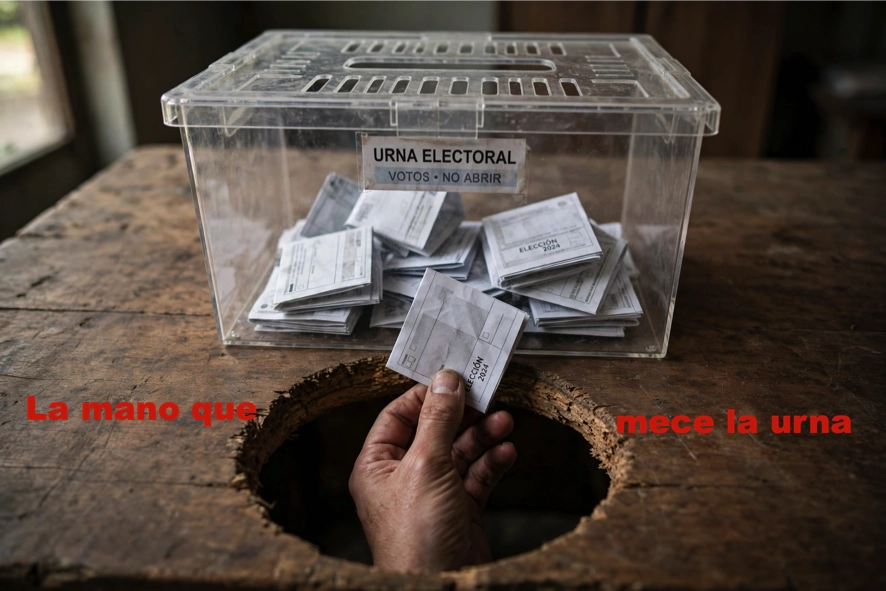

1.Yo soy la mano que mece la 🗳️

El virus sanchezz es especialista en manejar urnas, sabe que por él mismo no puede ganar, pero
es un gran trilero
Ninguna sorpresa, El virus sanchezz no ha terminado ninguna legislatura, las legilasturas duran cuatro años, decia.
Desde que llego al poder no me sorprende nada, bueno una cosa si me sorprendio "El tito Berni en calzonzillos"
La pregunta que me hago es por que ha tirado un año de legislatura,sobre todo por el juicio pendiente de su amada esposa. ¿Que hay oculto en el juicio?
Sera cosa de la Fiscalia, que depende de el, quizas no haya juicio. La Fiscalia ya se ha pronunciado, no habra acusacion.
No puede presentar datos, no hay ninguno bueno, sin duda presentara la subida del IPC de las pensiones, ¿Donde esta la bolita?, pues en la deuda, en el deficit de la Seguridad Social
en 2018, año de la llegada era de 34.888 millones, ahora es de 136.178 millones de euros, es decir las subidas no se han pagado
han sido a credito que tendremos que pagar.
Te hablara del PIB, somos el pais que mas crece, incluso por encima de Alemania, lo dice todos los años Pero nunca les pillamos, seguimos muy por debajo
Para mi el PIB son los precios de los productos de la estanteria del super. Ese crece cada dia.
2. La que no es espera😡
Estamos ante la campña electoral mas larga de nuestra historia, nada mas que 55 dias mas o menos, empezamos con el anuncio de la elecciones
Hay cantidad de encuestas, a cual mas interesada, ya lo deica el gran Winston Churchill,"No me creo ninguna encuesta que no haya manipulado yo mismo "
Creo que estas elecciones cambiaran a los partidos que han participado en este gobierno.
El psoe no es un partido democratico, sino un partido dictatorial, con un dictador al frente, que no permite la democracia, ni en su partido
ni en el pais, y que ha llevado a España a la ruina, y a la division de los españoles. Es necesario que el psoe obtenga su peor resultado de la historia, para que desaparezca,
y deje paso a un partido democratico, que respete la democracia y a los españoles.
El partido nacionalista vasco PNV, es un partido pendulo, una legislatura a la derecha y otra a la izquieda, por lo tanto es un partido traidor, dijo si al PP y se vendio al PSOE,
el pendulo a la izquierdo, pero en politica todo tiene un precio y son los votos.En la proximas autonomicas pagaran el precio, ahora gobiernan con apoyo del psoe, en la proximas
el psoe, lo que quede apoya a BILDU, de hecho lo ha hecho desde el principio, en la proximas en el Pais Vasco gobernara BILDU, para que esto no ocurra la sociedad tiene que girar
a la derecha, lo cual no es dificil, nada mas ver los resultados europeos.
JUNTS, este desaparecera, de hecho ya lo esta haciendo, Alianza Catalana se le comera, pagara su apoyo a El virus sanchezz
Izquiereda Unida, fue un partido con grandes estadistas, un partido de estado en muchas ocasiones, su error fue intrgrarse en Podemos, paracticamente desaparecido dentro de un
mar de siglas.Pdemos, quizas se mantenga con un par de escaños, tambien pagara sun total apoyo a El virus sanchezz.
3. El psoe ya ha puesto un muerto, con los que tiene.
3 de octubre de 2026 · 4 min de lectura
Como le gusta poner muertos al psoe cuando se cree que no son suyos, sobre todo si puede hechar la culpa a la maligna derecha nacional
lo dice ademas sin ningun complejo, se adueña con toda la geta, todos hemos oido a esa señora "La culpa es de Pedro Sanchez", pero El virus sanchezz. Actua como si
la cosa no fuera con, quizas con otro Sanchez.
Pero si hablamos de muertos empecemos por la COVID.La gestión de la pandemia en España tuvo deficiencias en el primer año,
debidas esencialmente a la incorrecta clasificación del riesgo del nuevo coronavirus. Toda la actitud posterior, incluyendo la comunicación del riesgo y la nula capacidad de anticipación,
vino condicionada por el deficiente análisis inicial del riesgo, hasta que fue imprescindible el confinamiento. En el verano y otoño de 2020 se repitieron los errores hasta la peor oleada pandémica,
ya en Enero y Febrero de 2021. Se ha avanzado poco en la preparación y respuesta ante futuras pandemias, con la excepción de la creación de la reserva estratégica de material crítico
No se sabe con exactamente los muertos que hubo, el Gobierno de la trasparecia fue como siempre opaco, se calcula en toro a 140.000. Claro que no fue culpa suya, ¡ Como va ser culpa suya !.
si acaso fue de la derecha que gobierna en las autonomias.
Se apropio de los muertos de la ETA, mas 850, El virus sanchezz.Dio el pesame por un suicidado en la carcel de la ETA.
La Dana de Valencia 267, fueron suyos por sus politicas Medio Ambientales, pero fue culpa de la derecha.
Los asesinados por el descarrilamiento del AVE en Adamuz, Yo no conducia el tren. Pues fijate si tiene muertos
PERO SOLO HABLA DE UNO
4. La Mari Chus "He vuelto"💃🏻
3 de octubre de 2026 · 4 min de lectura
La profundamente fracasada vuelve a la primera fila desde la ultima , que se merece por sus frases, un libro de esos de cosas dulces.
“Feijóo es el señor ‘Mopongo’, "Lo que dice el acuerdo es lo que dice el acuerdo, lo que no dice me lo dice." Ha vuelto para explicar al pueblo lo que es una huelga
«chiqui, mil millones no son nada», «este Gobierno ha solicitado entrono al billón o billón y medio de euros» o «los abuelos no quieren las pensiones para ellos».
Las huelgas generales se convocan contra el gobierno, pero en este caso se convoca contra la oposicio.
⚡️4.El ojo del Huracan ⚡️
El ojo del huracan, es la calma momentanea entre la primera mitad y antes de que pase la otra mitad del huracan
El Gobierno, socialista y progresista, que facil es decirlo, esta situado en el ojo del huracan,lo consiguio el dia que anuncio las elecciones.
La otra parte del huracan, le llegara despues de las elecciones, este o no este en el Gobierno, en estos 8 años se ha desmotrado
que un Gobierno, de progreso y socialista, no tiene principios, ¿Para que los quiero?. Yo no me creo nada absolutamente nada,
Todo lo que niega de palabra lo hace de hecho.
Lo que me impresiona, incluso me da temor, es la catadura moral de todo el Gobierno.